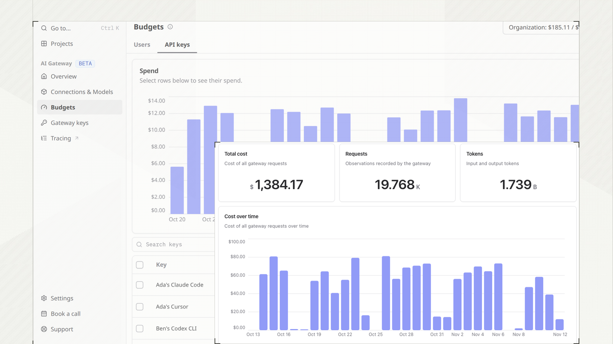
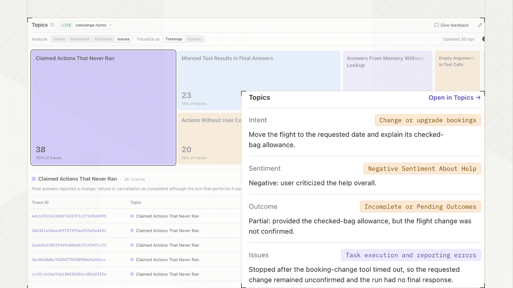
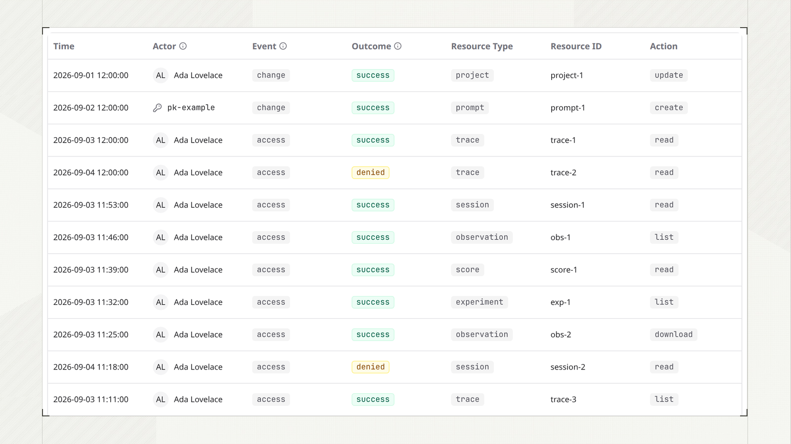
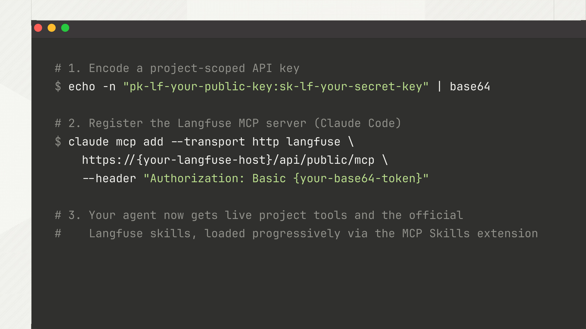

Hi {firstName},
November was launch month. The AI Gateway and Topics both went into public beta, the trace view got a redesign, and audit logs now cover reads. Here's what's new:

Point your app or coding agent at Langfuse instead of the provider: change the base URL and the API key, nothing else. Every teammate gets their own gateway key, the provider key stays in Langfuse, and every call is recorded as a trace with cost per user, key, and model.
Since the launch we added [1] Amazon Bedrock, OpenRouter, Vercel AI Gateway, xAI, Microsoft Azure, Google AI Studio, and Google Vertex AI as providers, [2] budgets per key, per user, and for the whole organization, with email warnings at 85% and 95%, [3] model restrictions per gateway key, and [4] the OpenAI Embeddings and Decisions APIs.
→ Connect Claude Code, Codex, GitHub Copilot, OpenCode, or pi

Topics clusters your production traces into named topics, so you see what users ask, how they felt, how it went, and what went wrong without reading every trace. Each trace is summarized from four angles (Intent, Sentiment, Outcome, Issues) and clustered per angle, so a failure spread across many user requests still lands in one Issues topic. On Halo, our in-app assistant, it surfaced users writing homework, a group pen-testing it, and a silent bug where the answer ended up inside the reasoning tokens.
Topics runs on your own LLM connections, and the first topics appear about five minutes after setup. Live maps keep adding new traces as they arrive; snapshots analyze one time window or slice, such as last week's gold-tier customers.
→ Set up Topics in your project
We rebuilt the trace view in many small steps over the past months, so you may not have noticed each one. Side by side, the difference is large: the Timeline and graph view show the shape of a big agent trace at a glance, the observation you are debugging gets the space, and the layout is the same in the full page, the side peek, and on small screens.
→ Read how we approached the redesign

Audit logs can now record who read your data, not only who changed it. With read-access logging on, every open, list, search, export, or download of traces, observations, scores, sessions, and experiments is recorded with the actor, the route, the returned row IDs, the outcome, and the client IP. It covers the UI, the public API, and MCP tools, and access events appear next to change events in the audit log viewer and export.
Also new: organization admins can turn off public share links for traces and sessions, and self-hosted instances can turn them off for every organization.

The Langfuse MCP server now bundles the official Langfuse agent skills through the MCP Skills extension. Connect the server once and your agent gets live tools for your project plus the playbooks to use them well, with no npx skills add and no cloned repositories. Langfuse Cloud serves the latest skills, self-hosted deployments serve the skills matching their version, and skills load progressively so your context window stays clean until you work on a Langfuse task.
The MCP server also gained tools to set a project's default evaluation model and run batch evaluations over existing observations, so an agent can switch judge models and re-score last week's traffic in one go.
Criteo, the commerce intelligence platform, built a shared evaluation framework on Langfuse so that AI agents written in both Python and C# keep performing as expected, across 20 teams.
"At Criteo, we make decisions based on data. Evaluation through Langfuse is key to that."
–– Clément Charnay, Senior Software Development Engineer at Criteo
Missed the Community Town Hall on November 12? The recording covers the AI Gateway launch, a demo of everything shipped since the last Town Hall, and the updated roadmap.
Our team is growing (we now hire remote in US-East!). If you're passionate about building open source AI dev tools, we'd love to hear from you.
→ See all open roles (https://clickhouse.com/company/careers?search=langfuse) ($5,000 for successful referrals!)
Any feedback, questions, or ideas? Just hit reply; we read and respond to every message.
Best,
Marc
—
Co-founder & CEO, langfuse.com (https://langfuse.com?utm_source=langfuse&utm_medium=email&utm_campaign=product_update_2026_11&utm_content=signature)
🐧 @marcklingen (https://x.com/marcklingen)
⭐️ github.com/langfuse/langfuse (https://github.com/langfuse/langfuse/)